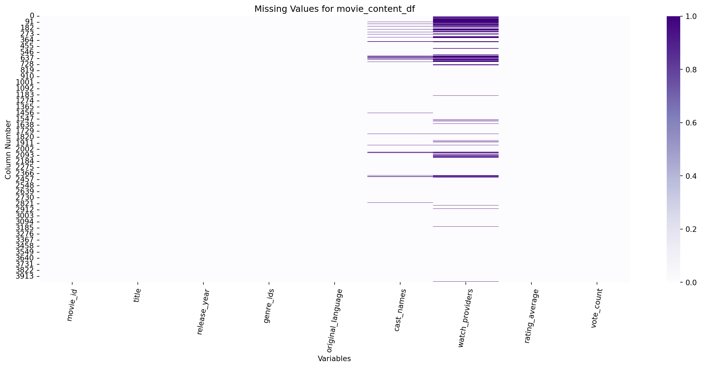
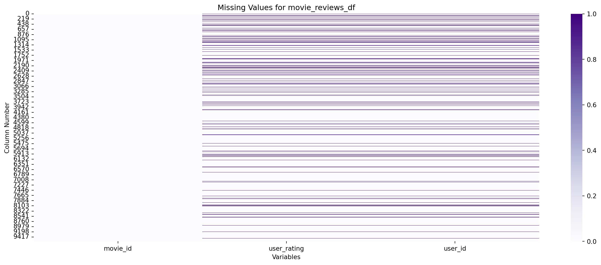
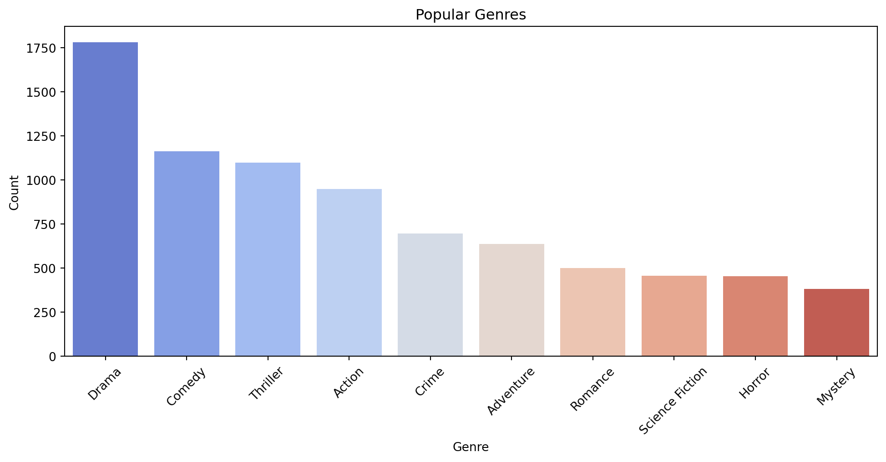
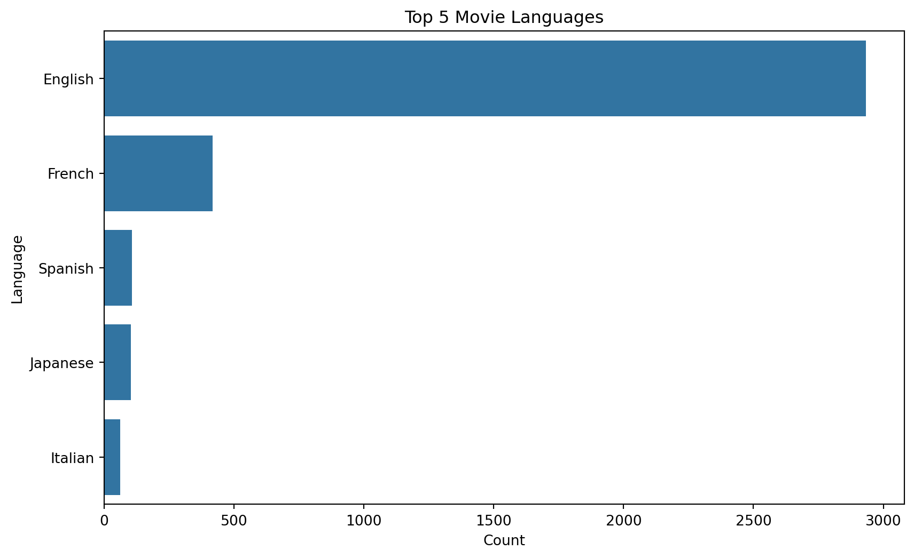
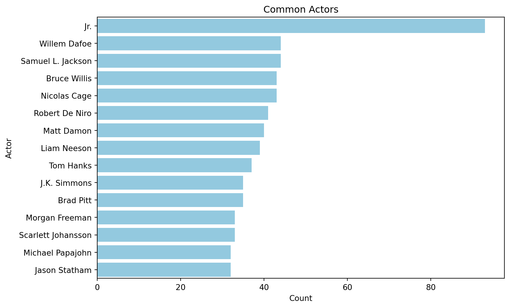
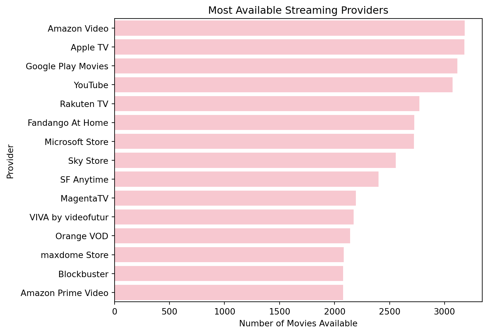
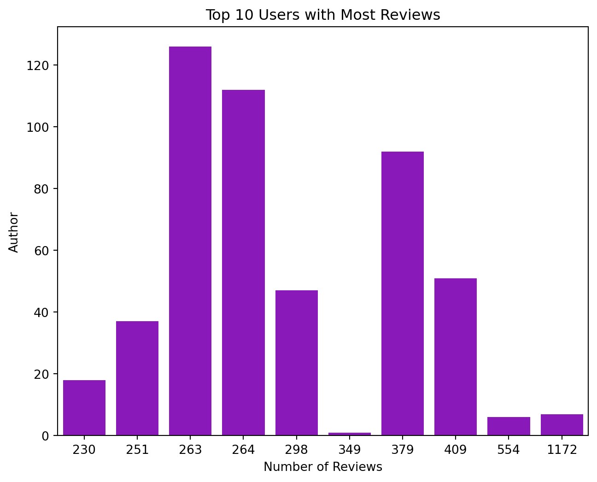

# Loading necessary packages
import requests
import pandas as pd
import time
api_key = "API_KEY"
# Base URLs
url = "https://api.themoviedb.org/3/movie/popular"
credits_url_template = "https://api.themoviedb.org/3/movie/{}/credits"
providers_url_template = "https://api.themoviedb.org/3/movie/{}/watch/providers"
# Number of pages to retrieve
total_pages = 200
all_movies = []
# Fetch popular movies
for page in range(1, total_pages + 1):
parameters = {"api_key": api_key, "page": page}
response = requests.get(url, params=parameters)
if response.status_code == 200:
data = response.json()
movies = data["results"]
for movie in movies:
movie["movie_id"] = movie.pop("id") # Rename 'id' to 'movie_id'
movie["rating_average"] = movie.pop("vote_average") # Rename 'vote_average' to 'rating_average'
# Get cast names
credits_url = credits_url_template.format(movie["movie_id"])
credits_response = requests.get(credits_url, params={"api_key": api_key})
if credits_response.status_code == 200:
credits_data = credits_response.json()
cast_names = {cast_member["name"] for cast_member in credits_data.get("cast", [])}
movie["cast_names"] = ", ".join(cast_names)
else:
movie["cast_names"] = None
# Get watch providers
providers_url = providers_url_template.format(movie["movie_id"])
providers_response = requests.get(providers_url, params={"api_key": api_key})
if providers_response.status_code == 200:
providers_data = providers_response.json()
provider_names = set() # Store unique provider names
for region, provider_info in providers_data.get("results", {}).items():
for category, providers_list in provider_info.items():
if isinstance(providers_list, list):
provider_names.update(provider["provider_name"] for provider in providers_list)
movie["watch_providers"] = ", ".join(provider_names)
else:
movie["watch_providers"] = None
time.sleep(0.2) # Short delay to avoid rate limiting
all_movies.extend(movies)
else:
print("Error:", response.status_code)
time.sleep(0.5)
print(page)
# Convert to DataFrame
movie_content_df = pd.DataFrame(all_movies)Movie Recommender System Project
Introduction
Objective
This project aims to develop a movie recommendation system using data from The Movie Database (TMDb) API. By applying Python-based machine learning techniques, the system will analyze user preferences and suggest relevant movies. The goal is to create a personalized, efficient recommendation system that enhances content discovery for users.
Motivation
In today’s digital entertainment world, users are overwhelmed with content options, making personalized recommendations more essential than ever. Recommendation systems help by offering tailored suggestions, which improves user engagement and satisfaction. With platforms like Netflix and Hulu relying on data-driven algorithms, effective recommendation systems are crucial to enhancing viewer experience. Using data from an API like TMDb, which includes extensive movie data, allows for more accurate and relevant content suggestions. This allows for a more engaging and relevant user experience, fostering deeper interaction with the platform and greater satisfaction with the recommendations provided.
Methodology
The movie recommendation system is implemented using Python and relies on data extracted from The Movie Database (TMDb) API to ensure access to the most up-to-date movie information. The system follows a hybrid approach using the cascade method, where content-based filtering is applied first to narrow down the dataset. This step filters movies based on their features, such as genres and other content-based movie information, to identify those similar to a user’s interests.
Once the dataset is refined, the filtered results are passed into the collaborative filtering script, if there is movie review data available for that film, which further analyzes patterns in user interactions to generate the final recommendations. By combining these two approaches, the system enhances recommendation accuracy and ensures that users receive relevant movie suggestions tailored to their preferences.
Data Description
As aforementioned, the data is obtained using TMDb API. The data is extracted into two separate DataFrames, one content-based and one collaborative-based. The content-based DataFrame, movie_content_df, after undergoing all preprocessing and cleaning, includes the following variables: movie_id, title, release_year, genre_ids, original_language, cast_names, watch_providers, rating_average, and vote_count. The collaborative-based DataFrame, movie_reviews_df, after undergoing all preprocessing and cleaning, includes the following variables: movie_id, user_rating, and user_id. This DataFrame of movie reviews is also merged with movies_df to build the collaborative based recommender, which is just selecting a subset of the columns from movie_content_df. These columns are movie_id, title, release_year, genre_ids, original_language, and vote_count.
The movie_content_df has 4,000 rows representing an observation for each of the 4,000 unique movies. The movie_reviews_df has 9,602 rows representing a user rating for 2,540 unique movies. Due to time and computing power limitations on our local computers, we weren’t able to retrieve more than this amount of movie reviews, which results in there being 1,668 unique movies that are in both the movie_content_df and the movie_reviews_df, and 2,332 movies that we have content information on, but no user reviews. This discrepancy between the datasets is what lead to the pipeline that was implemented for the hybrid recommender approach, which will be explained in further detail later on.
API Data Retrieval
To use the TMDb API, users must create an account on The Movie Database website and generate a personal authentication key. This key is required to authenticate API requests and obtain data. Content-based filtering and collaborative-based filtering have their own respective data retrieval scripts. Both retrieval scripts include a delay between requests to avoid hitting TMDb’s rate limit.
Content-based filtering
The system queries the following TMDb API endpoints to gather relevant movie data:
General Movie Metadata (
/movie/popular,/movie/{movie_id})- Retrieves a list of popular movies with their movie identification numbers, movie titles, genres, release dates, languages, and voting/popularity information.
Cast Information (
/movie/{movie_id}/credits)- Extracts key actors from each movie.
Watch Providers (
movie/{movie_id}/watch/providers)- Obtains a list of all available streaming service platforms for each movie.
Collaborative-based filtering
# Load necessary packages
import requests
import pandas as pd
import time
api_key = "API_KEY"
# Base URLs
popular_movies_url = "https://api.themoviedb.org/3/movie/popular"
reviews_url_template = "https://api.themoviedb.org/3/movie/{}/reviews"
# Number of pages to retrieve
total_pages = 200
all_movies = []
# Fetch popular movies
for page in range(1, total_pages + 1):
parameters = {"api_key": api_key, "page": page}
response = requests.get(popular_movies_url, params=parameters)
if response.status_code == 200:
data = response.json()
all_movies.extend(data["results"])
else:
print("Error:", response.status_code)
break
time.sleep(0.5) # Prevent rate-limiting
print(page)
# Convert movies to DataFrame
movies_df = pd.DataFrame(all_movies)
# Fetch reviews for each movie
reviews_data = []
timeout_duration = 0.5
for movie_id in movies_df["id"]:
response = requests.get(reviews_url_template.format(movie_id), params={"api_key": api_key})
if response.status_code == 200:
reviews = response.json().get("results", [])
for review in reviews:
reviews_data.append({
"movie_id": movie_id,
"author": review.get("author", "Unknown"),
"user_rating": review.get("author_details", {}).get("rating", None) # Changed "rating" to "user_rating"
})
else:
print("Error:", response.status_code)
time.sleep(0.5)
# Convert reviews to DataFrame
movie_reviews_df = pd.DataFrame(reviews_data)The system queries the following TMDb API endpoints to gather relevant movie data:
Popular Movies List (
/movie/popular)- Retrieves the same list of popular movies that was obtained in the content-based retrieval script, but only extracts movie identification numbers.
User Ratings (
/movie/{movie_id}/reviews)- Collects user-generated movie ratings on a scale from 1-10.
Data Cleaning and Feature Engineering
After extracting all of the data from the online database, there are some preprocessing steps to be done so that the data is clean and in the correct format to move forward with the recommender system implementation. Each DataFrame has their own script for the tidying that is necessary.
Content-based filtering
# Creates the dictionary of genre IDs and names
# Load necessary packages
import requests
import pandas as pd
api_key = "API_KEY"
# Base URL
url = "https://api.themoviedb.org/3/genre/movie/list"
# Set parameters like the page number and API key
parameters = {
"api_key": api_key,
"page":1
}
# Make the GET request to fetch the data
response = requests.get(url, params=parameters)
# Check if the request was successful
if response.status_code == 200:
genre_data = response.json() # Convert response to JSON
genres = genre_data["genres"] # Extract the list of genres
genre_dict = {genre["id"]: genre["name"] for genre in genres} # Create dictionary
print(genre_dict) # Print the genre mapping
else:
print("Error", response.status_code){28: 'Action', 12: 'Adventure', 16: 'Animation', 35: 'Comedy', 80: 'Crime', 99: 'Documentary', 18: 'Drama', 10751: 'Family', 14: 'Fantasy', 36: 'History', 27: 'Horror', 10402: 'Music', 9648: 'Mystery', 10749: 'Romance', 878: 'Science Fiction', 10770: 'TV Movie', 53: 'Thriller', 10752: 'War', 37: 'Western'}The first step in preprocessing the content-based data is to create a dictionary that maps the genre identification numbers to its corresponding genre category.
# Load necessary packages
import pandas as pd
import ast
def genre_preprocessing(dataframe):
# Convert genre_ids to lists
dataframe['genre_ids'] = dataframe['genre_ids'].apply(ast.literal_eval)
# Map genre_ids to genre names
dataframe['genre_ids'] = dataframe['genre_ids'].apply(lambda x: [genre_dict[genre_id] for genre_id in x])
return dataframe
def content_preprocessing(dataframe):
# Format genre_ids
dataframe = genre_preprocessing(dataframe)
# Select necessary columns
dataframe = dataframe[['movie_id', 'title', 'release_date', 'genre_ids', 'original_language', 'cast_names', 'watch_providers', 'rating_average', 'vote_count']]
return dataframe
# Apply the preprocessing function
movie_content_df = content_preprocessing(movie_content_df)The code chunk above applies the genre dictionary to extract genre categories. It also retains relevant columns in the DataFrame.
# Load necessary packages
import pandas as pd
import pycountry # for languages convertion
import pandas as pd
movie_content_df.columns
# Tidying `genre_ids`
def clean_genre_ids(value):
if isinstance(value, list): # If it's already a list, clean and join
return ', '.join(genre.strip() for genre in value)
elif isinstance(value, str) and value.startswith('c(') and value.endswith(')'):
# Handle string cases formatted like R's "c(...)"
genres = [genre.strip().strip('"') for genre in value[2:-1].split(',')]
return ', '.join(genres)
return value # Return as is if neither case
# Apply the function to genre_ids column
movie_content_df['genre_ids'] = movie_content_df['genre_ids'].apply(clean_genre_ids)
# Check genre_ids missing and type
movie_content_df['genre_ids'].isna().sum() # No missing data
movie_content_df['genre_ids'].apply(type).value_counts() # All are string type
# Tidying original language to be full word
def convert_language_code(code):
try:
language = pycountry.languages.get(alpha_2=code)
return language.name
except:
return code # no corresponding language, return original language code
movie_content_df['original_language'] = movie_content_df['original_language'].apply(convert_language_code)
movie_content_df["original_language"] = movie_content_df["original_language"].replace("cn", "Chinese") # cn to Chinese
movie_content_df["original_language"] = movie_content_df["original_language"].replace("xx", "Unknown") # xx to Unknown
# Editing data types
movie_content_df['rating_average'] = pd.to_numeric(movie_content_df['rating_average'], errors='coerce')
movie_content_df['rating_average'] = movie_content_df['rating_average'].round(0).astype(int) # vote_average to round
movie_content_df['vote_count'] = pd.to_numeric(movie_content_df['vote_count'], errors='coerce')
# Creating a `release_year` column
movie_content_df = movie_content_df.copy() # Ensure movies_df is a separate DataFrame
movie_content_df["release_date"] = movie_content_df["release_date"].astype(str)
movie_content_df = movie_content_df[movie_content_df["release_date"] != '']
movie_content_df["release_year"] = pd.to_numeric(movie_content_df["release_date"].str[:4], errors = "coerce")
movie_content_df = movie_content_df.drop(columns=["release_date"])
# Changing the `title` type
# Convert to pandas' new string type
movie_content_df["title"] = movie_content_df["title"].astype("string")
# Check the dtype again
print(movie_content_df["title"].dtype)
# Editing `cast_names`
movie_content_df["cast_names"] = movie_content_df["cast_names"].replace("", pd.NA)
# Editing `watch_providers`
movie_content_df["watch_providers"] = movie_content_df["watch_providers"].replace("", pd.NA)
# Reordering column names
# Define the new column order
new_column_order = ['movie_id', 'title', 'release_year', 'genre_ids', 'original_language', 'cast_names', 'watch_providers', 'rating_average', 'vote_count']
# Reorganize columns in the DataFrame
movie_content_df = movie_content_df[new_column_order]stringThe following edits were made in the code chunk above:
genre_idsis edited to be a cleaned, comma-separated stringoriginal_languageis edited to display the full name of the language, not the abbreviationrelease_yearis created fromrelease_dateandrelease_dateis dropped from the DataFramecast_namesandwatch_providersare edited to replace empty strings withNAAll columns are checked to ensure correct data types
Columns are reordered in the DataFrame for readability
Missing values are retained in the DataFrame
Collaborative-based filtering
import pandas as pd
import ast
def genre_preprocessing(dataframe):
# Convert genre_ids to lists
dataframe['genre_ids'] = dataframe['genre_ids'].apply(ast.literal_eval)
# Map genre_ids to genre names
dataframe['genre_ids'] = dataframe['genre_ids'].apply(lambda x: [genre_dict[genre_id] for genre_id in x])
return dataframe
def collab_preproccesing(dataframe):
# Format genre_ids
dataframe = genre_preprocessing(dataframe)
# Select necessary columns
dataframe = dataframe[['id', 'title', 'release_date', 'genre_ids', 'original_language', 'vote_count']]
return dataframe
# Apply the preprocessing function
movies_df = collab_preproccesing(movies_df)To begin for the collaborative based preprocessing, a similar pipeline to what was used for content based is followed. The genre ids are mapped to genres names and the relevant columns are retained.
# Creating a `user_id` column
user_id_map = {} # Dictionary to store author -> user_id mapping
current_id = 1
# Ensure 'user_id' column exists
movie_reviews_df["user_id"] = pd.NA
# Get valid indices
valid_indices = movie_reviews_df["user_rating"].notna() & (movie_reviews_df["user_rating"] != "")
# Store user IDs in a list to avoid modifying DataFrame during iteration
user_ids = []
for idx, author in movie_reviews_df.loc[valid_indices, "author"].items():
if author not in user_id_map:
user_id_map[author] = current_id
current_id += 1
user_ids.append((idx, user_id_map[author]))
# Assign user IDs to the DataFrame
for idx, user_id in user_ids:
movie_reviews_df.loc[idx, "user_id"] = user_id
# Convert `user_id` to integers (nullable type to allow NaN)
movie_reviews_df["user_id"] = movie_reviews_df["user_id"].astype("Int64")
# Drop the `author` column
movie_reviews_df = movie_reviews_df.drop(columns=["author"])The following edits were made in the code chunk above:
user_id, a unique identification number, is assigned to each reviewer and is created fromauthorandauthoris dropped from the DataFrameMissing values are retained in the DataFrame
Exploratory Data Analysis (EDA)
In this section, we are focusing on EDA to better understand the data. This is the stage where we are given insights into the structure and characteristics of the data, for instance missing values.
Variables
import seaborn as sns
import matplotlib.pyplot as plt
from rich.console import Console
from rich.table import Table
console = Console()
table = Table(title = "Movie Dataset Variables", show_lines = True)
table.add_column("Variable Name", style = "cyan", justify = "left")
table.add_column("Description", style = "magenta", justify = "left")
table.add_row('movie_id', 'Unique identifier of the movie.')
table.add_row('title', 'Title of the movie.')
table.add_row('release_year', 'The year the movie was released.')
table.add_row('genre_ids', 'List of genres associated with a movie.')
table.add_row('original_language', 'Original language of the movie.')
table.add_row('cast_names', 'List of actors in the movie.')
table.add_row('watch_providers', 'Streaming platforms where the movie is available.')
table.add_row('rating_average', 'A quantitative assessment of the overall quality of a movie.')
table.add_row('vote_count', 'The total number of people who voted for the movie.')
table.add_row('author', 'Unique identifier for the user.')
table.add_row('user_rating', 'Rating given by user.')
console.print(table)Movie Dataset Variables ┏━━━━━━━━━━━━━━━━━━━┳━━━━━━━━━━━━━━━━━━━━━━━━━━━━━━━━━━━━━━━━━━━━━━━━━━━━━━━━━━━━━━┓ ┃ Variable Name ┃ Description ┃ ┡━━━━━━━━━━━━━━━━━━━╇━━━━━━━━━━━━━━━━━━━━━━━━━━━━━━━━━━━━━━━━━━━━━━━━━━━━━━━━━━━━━━┩ │ movie_id │ Unique identifier of the movie. │ ├───────────────────┼──────────────────────────────────────────────────────────────┤ │ title │ Title of the movie. │ ├───────────────────┼──────────────────────────────────────────────────────────────┤ │ release_year │ The year the movie was released. │ ├───────────────────┼──────────────────────────────────────────────────────────────┤ │ genre_ids │ List of genres associated with a movie. │ ├───────────────────┼──────────────────────────────────────────────────────────────┤ │ original_language │ Original language of the movie. │ ├───────────────────┼──────────────────────────────────────────────────────────────┤ │ cast_names │ List of actors in the movie. │ ├───────────────────┼──────────────────────────────────────────────────────────────┤ │ watch_providers │ Streaming platforms where the movie is available. │ ├───────────────────┼──────────────────────────────────────────────────────────────┤ │ rating_average │ A quantitative assessment of the overall quality of a movie. │ ├───────────────────┼──────────────────────────────────────────────────────────────┤ │ vote_count │ The total number of people who voted for the movie. │ ├───────────────────┼──────────────────────────────────────────────────────────────┤ │ author │ Unique identifier for the user. │ ├───────────────────┼──────────────────────────────────────────────────────────────┤ │ user_rating │ Rating given by user. │ └───────────────────┴──────────────────────────────────────────────────────────────┘
Missing Data
import warnings
warnings.simplefilter(action ='ignore', category = FutureWarning)
#plotting missing values for movie_content_df
plt.figure(figsize = (18,8))
sns.heatmap(movie_content_df.isnull(), cmap = "Purples")
plt.xlabel('Variables')
plt.ylabel('Column Number')
plt.xticks(rotation = 80)
plt.title('Missing Values for movie_content_df')
plt.subplots_adjust(bottom = 0.25)
plt.show()
The dataset movie_content_df is missing some observations in genre_ids, cast_names, and watch_providers. It appears that movies missing watch provider information are those that have been newly released.
#plotting missing values for movie_reviews_df
plt.figure(figsize = (18,8))
sns.heatmap(movie_reviews_df.isnull(), cmap = "Purples")
plt.xlabel('Variables')
plt.ylabel('Column Number')
plt.title('Missing Values for movie_reviews_df')
plt.subplots_adjust(bottom = 0.25)
plt.show()
While in the movie_reviews_df, it is missing a majority of user_rating. It could be that users either did not watch the movie or chose to skip rating it.
Popular Genres
#separating genres and exploding
movie_content_df['genre_ids'] = movie_content_df['genre_ids'].fillna('').astype(str)
movie_content_df['genre_list'] = movie_content_df['genre_ids'].apply(lambda x: [genre.strip() for genre in x.split(',')])
movies_exploded = movie_content_df.explode('genre_list')
#bar chart for genre counts
genre_counts = movies_exploded['genre_list'].value_counts()
plt.figure(figsize = (12, 6))
sns.barplot(x = genre_counts.index[:10], y = genre_counts.values[:10], palette = "coolwarm")
plt.xticks(rotation = 45)
plt.xlabel('Genre')
plt.ylabel('Count')
plt.title('Popular Genres')
plt.subplots_adjust(bottom = .25)
plt.show()
About 1600 of movies are categorized under Drama, making it the most popular genre. Comedy and Thriller follow closely behind with approximately 1400 and 1000 counts. This suggests that these genres dominate the dataset, potentially representing popular trends in the movie industry.
Popular Movie Languages
#countplot for languages
plt.figure(figsize = (12, 6))
sns.countplot(y = 'original_language', data = movie_content_df, order = movie_content_df['original_language'].value_counts(ascending = False).index[:5])
plt.xlabel('Count')
plt.ylabel('Language')
plt.title('Top 5 Movie Languages')
plt.subplots_adjust(left = .25)
plt.show()
We can see that the majority of the movies in our dataset have their original language in English, with a count of approximately 2,800. This is expected as English is the dominant language in the film industry. The next popular languages are French and Japanese, with approximately 500 and 100 counts. France is considered as the origin of film and the Cannes Film Festival is French-based, while Japanese films are distinct in style which set apart from other films.
Popular Actors
#separating actors and exploding
movie_content_df['actors_list'] = movie_content_df['cast_names'].str.split(',')
movies_exploded = movie_content_df.explode('actors_list')
#bar chart for actor counts
actors_count = movies_exploded['actors_list'].value_counts().sort_values(ascending = False)
plt.figure(figsize = (12, 6))
sns.barplot(x = actors_count.values[:15], y = actors_count.index[:15], orient = 'h', color = "skyblue")
plt.xlabel('Count')
plt.ylabel('Actor')
plt.title('Common Actors')
plt.yticks(rotation = 0)
plt.subplots_adjust(left = .3)
plt.show()
As we can see “Jr.” is the most common actor in our movie dataset with a count of approximately 85. We do not know who exactly “Jr.” is, but we believe the name was cut when retrieving the data. Other actors such as Samuel L. Jackson, and Bruce Willis were also common with counts of approximately 45 and 42.
Providers
movie_content_df['providers_list'] = movie_content_df['watch_providers'].str.split(',')
movies_exploded = movie_content_df.explode('providers_list')
# Count the occurrences of each provider
provider_counts = movies_exploded['providers_list'].value_counts()
# Bar chart for the top providers
plt.figure(figsize=(12,6))
sns.barplot(x=provider_counts.values[:15], y=provider_counts.index[:15], color="pink")
plt.xlabel('Number of Movies Available')
plt.ylabel('Provider')
plt.title('Most Available Streaming Providers')
plt.subplots_adjust(left=0.4)
plt.show()
Our top providers, ‘Apple TV’, ‘Google Play Movies’, dominate the dataset, offering approximately 3,000 movies. This reflects their strong presence in the streaming market. While these providers account for a significant portion of the dataset, YouTube and Microsoft Store offer approximately 2,500+ movies, highlighting the growing presence of digital platforms.
Reviewers
#counting how many times an author reviewed movies
user_review_counts = movie_reviews_df['user_id'].value_counts()
# Bar chart for top reviewers
plt.figure(figsize=(12,6))
sns.barplot(x=user_review_counts.values[:10], y=user_review_counts.index[:10], color="darkviolet")
plt.xlabel('Number of Reviews')
plt.ylabel('Author')
plt.title('Top 10 Users with Most Reviews')
plt.subplots_adjust(left=0.4)
plt.show()
‘CinemaSerf’ is our top reviewer, contributing reviews for approximately 300 movies. Following closely behind are ‘r96sk’ and ‘Manuel São Bento’ with approximately 170 and 110 movie reviews. It would be interesting to explore if their reviews are concentrated in particular genres or if they are more diverse.
Modeling Approach
Content-Based Filtering
Content-based filtering recommends movies based on their features rather than user interactions. We use TF-IDF vectorization to encode movie attributes and compute similarity using cosine similarity and linear kernel similarity.
Implementation Steps:
1. Cosine Similarity
- Combine
genre_ids,cast_names, andwatch_providersinto a single text feature - Apply TF-IDF vectorization to convert text into numerical vectors
- Compute cosine similarity to measure the pairwise similarity between movies
# Combine relevent features
movie_content_df["combined_features"] = (
movie_content_df["genre_ids"].fillna("").str.replace(",", " ") + " | " +
movie_content_df["cast_names"].fillna("").str.replace(",", " ") + " | " +
movie_content_df["watch_providers"].fillna("").str.replace(",", " ")
)
# TF-IDF Vectorization
from sklearn.feature_extraction.text import TfidfVectorizer
tfidf_vectorizer = TfidfVectorizer(stop_words="english", min_df=2)
tfidf_matrix = tfidf_vectorizer.fit_transform(movie_content_df["combined_features"])
print("TF-IDF Matrix Shape:", tfidf_matrix.shape)
# Compute Cosine Similarity
from sklearn.metrics.pairwise import cosine_similarity
cosine_sim = cosine_similarity(tfidf_matrix, tfidf_matrix)
print("Cosine Similarity Matrix Shape:", cosine_sim.shape)
print("Sample Cosine Similarity Scores:\n", cosine_sim[:5, :5])TF-IDF Matrix Shape: (4000, 25462)
Cosine Similarity Matrix Shape: (4000, 4000)
Sample Cosine Similarity Scores:
[[1. 0.02490704 0.01305899 0.01180896 0.00451682]
[0.02490704 1. 0.01944315 0.0434806 0.00603281]
[0.01305899 0.01944315 1. 0.02217178 0. ]
[0.01180896 0.0434806 0.02217178 1. 0.01443588]
[0.00451682 0.00603281 0. 0.01443588 1. ]]2. Linear Kernel Similarity
- Integrate
rating_averageandvote_countwith linear kernel similarity - Normalize numeric features and concatenate them with TF-IDF vectors
- Compute linear kernel similarity
from sklearn.feature_extraction.text import TfidfVectorizer
from sklearn.preprocessing import MinMaxScaler
import numpy as np
# TF-IDF
movie_content_df["combined_features"] = (
movie_content_df["genre_ids"].fillna("").str.replace(",", " ") + " | " +
movie_content_df["cast_names"].fillna("").str.replace(",", " ") + " | " +
movie_content_df["watch_providers"].fillna("").str.replace(",", " ")
)
tfidf_vectorizer = TfidfVectorizer(stop_words="english", min_df=2)
tfidf_matrix = tfidf_vectorizer.fit_transform(movie_content_df["combined_features"])
# add numeric features(need standardization)
scaler = MinMaxScaler()
numeric_features = movie_content_df[["rating_average", "vote_count"]].fillna(0)
numeric_matrix = scaler.fit_transform(numeric_features)
# integrate TFIDF and numeric features
final_matrix = np.hstack((tfidf_matrix.toarray(), numeric_matrix))
# Linear Kernel similarity
from sklearn.metrics.pairwise import linear_kernel
linear_sim = linear_kernel(final_matrix, final_matrix)
print("Linear Kernel Similarity Matrix Shape:", linear_sim.shape)
print("Sample Linear Kernel Similarity Scores:\n", linear_sim[:5, :5])Linear Kernel Similarity Matrix Shape: (4000, 4000)
Sample Linear Kernel Similarity Scores:
[[1.64266135 0.50556474 0.49307841 0.65182006 0.48452237]
[0.50556474 1.36016254 0.37944795 0.52348334 0.36603418]
[0.49307841 0.37944795 1.36000014 0.50217186 0.36000004]
[0.65182006 0.52348334 0.50217186 1.64000005 0.4944359 ]
[0.48452237 0.36603418 0.36000004 0.4944359 1.36000001]]3. Movie Recommendation System
Fuzzy matching ensures accurate title recognition
Retrieve the most similar movies using
- Cosine Similarity (text only)
- Linear Kernel Similarity (text + numeric)
from difflib import get_close_matches
def content_based_movie_recs_print(movie_title, movie_content_df, cosine_sim, top_n=11):
# prepprocess input: remove space and lowercase
clean_title = movie_title.strip().lower()
# preprocess movie title
movie_content_df["clean_title"] = movie_content_df["title"].str.strip().str.lower()
# find the most similar movie
possible_matches = get_close_matches(clean_title, movie_content_df["clean_title"], n=1, cutoff=0.7)
if possible_matches:
clean_title = possible_matches[0]
movie_idx = movie_content_df[movie_content_df["clean_title"] == clean_title].index
if movie_idx.empty:
return f"Movie '{movie_title.strip()}' not found. Please check the title."
movie_idx = movie_idx[0]
similarity_scores = list(enumerate(cosine_sim[movie_idx]))
similarity_scores = sorted(similarity_scores, key=lambda x: x[1], reverse=True)[1:top_n+1]
top_movies = similarity_scores[1:top_n+1]
recommendations = movie_content_df.iloc[[i[0] for i in top_movies]][["title", "genre_ids", "rating_average"]]
print(f"\n🎬 Using matched movie: {movie_content_df.iloc[movie_idx]['title']}")
print(f"\n📌 Top 10 movies similar to '{movie_title.strip()}':")
for i, row in enumerate(recommendations.itertuples(), start=1):
print(f"{i}. {row.title} (Genre: {row.genre_ids}, Rating: {row.rating_average})")
return recommendationsrecommendations1 = content_based_movie_recs_print("The Gorgee", movie_content_df, cosine_sim)
recommendations2 = content_based_movie_recs_print("Paprika", movie_content_df, cosine_sim)
🎬 Using matched movie: The Gorge
📌 Top 10 movies similar to 'The Gorgee':
1. Alien (Genre: Horror, Science Fiction, Rating: 8)
2. The New Mutants (Genre: Science Fiction, Horror, Action, Rating: 6)
3. More (Genre: Animation, Science Fiction, Rating: 8)
4. Sherlock Holmes (Genre: Action, Adventure, Crime, Mystery, Rating: 7)
5. The Double (Genre: Thriller, Drama, Rating: 7)
6. Split (Genre: Horror, Thriller, Rating: 7)
7. The Huntsman: Winter's War (Genre: Action, Adventure, Drama, Rating: 6)
8. Lifted (Genre: Family, Animation, Science Fiction, Comedy, Rating: 8)
9. A Monster Calls (Genre: Fantasy, Adventure, Family, Rating: 7)
10. Red Lights (Genre: Thriller, Rating: 6)
🎬 Using matched movie: Paprika
📌 Top 10 movies similar to 'Paprika':
1. Vampire Hunter D: Bloodlust (Genre: Animation, Fantasy, Horror, Action, Adventure, Science Fiction, Rating: 8)
2. Evangelion: 3.0+1.0 Thrice Upon a Time (Genre: Animation, Action, Science Fiction, Drama, Rating: 8)
3. Evangelion: 3.0 You Can (Not) Redo (Genre: Animation, Science Fiction, Action, Drama, Rating: 7)
4. Akira (Genre: Animation, Science Fiction, Action, Rating: 8)
5. Batman Ninja vs. Yakuza League (Genre: Animation, Action, Rating: 0)
6. Mirai (Genre: Animation, Family, Fantasy, Adventure, Drama, Rating: 7)
7. Neon Genesis Evangelion: The End of Evangelion (Genre: Animation, Science Fiction, Action, Drama, Rating: 8)
8. Perfect Blue (Genre: Animation, Thriller, Rating: 8)
9. Dragon Ball Z: Battle of Gods (Genre: Animation, Action, Science Fiction, Rating: 7)
10. Evangelion: 2.0 You Can (Not) Advance (Genre: Animation, Science Fiction, Action, Drama, Rating: 8)from difflib import get_close_matches
def content_based_movie_recs_linear(movie_title, movie_content_df, linear_sim, top_n=10):
# prepprocess input: remove space and lowercase
clean_title = movie_title.strip().lower()
# preprocess movie title
movie_content_df["clean_title"] = movie_content_df["title"].str.strip().str.lower()
# find the most similar movie
possible_matches = get_close_matches(clean_title, movie_content_df["clean_title"], n=1, cutoff=0.7)
if possible_matches:
clean_title = possible_matches[0]
else:
return f"Movie '{movie_title.strip()}' not found. Please check the title."
movie_idx = movie_content_df[movie_content_df["clean_title"] == clean_title].index
if movie_idx.empty:
return f"Movie '{movie_title.strip()}' not found. Please check the title."
movie_idx = movie_idx[0]
similarity_scores = list(enumerate(linear_sim[movie_idx]))
similarity_scores = sorted(similarity_scores, key=lambda x: x[1], reverse=True)
# Top 10
top_movies = similarity_scores[1:top_n+1]
recommendations = movie_content_df.iloc[[i[0] for i in top_movies]][["title", "genre_ids", "rating_average"]]
print(f"\n🎬 Using matched movie: {movie_content_df.iloc[movie_idx]['title']}")
print(f"\n📌 Top 10 movies similar to '{movie_title.strip()}':")
for i, row in enumerate(recommendations.itertuples(), start=1):
print(f"{i}. {row.title} (Genre: {row.genre_ids}, Rating: {row.rating_average})")
return recommendationsrecommended_movies_linear1 = content_based_movie_recs_linear("The Gorgee", movie_content_df, linear_sim)
recommended_movies_linear2 = content_based_movie_recs_linear("paprika", movie_content_df, linear_sim)
🎬 Using matched movie: The Gorge
📌 Top 10 movies similar to 'The Gorgee':
1. The Consequences of "The Premiere of "The Making of "The Lumberjack's Daughter""" (Genre: Comedy, Crime, Rating: 10)
2. The Shawshank Redemption (Genre: Drama, Crime, Rating: 9)
3. The Home (Genre: Horror, Thriller, Rating: 10)
4. Lilim (Genre: Horror, Thriller, Drama, Rating: 10)
5. The Dark Knight (Genre: Drama, Action, Crime, Thriller, Rating: 9)
6. Queen Mom (Genre: Drama, Comedy, Rating: 10)
7. What's Next? (Genre: War, Documentary, Drama, Rating: 10)
8. Balada Para Un Loco (Genre: Music, Comedy, Rating: 10)
9. Pludselig Stod Verden Stille (Genre: Documentary, Rating: 10)
10. The Green Mile (Genre: Fantasy, Drama, Crime, Rating: 9)
🎬 Using matched movie: Paprika
📌 Top 10 movies similar to 'paprika':
1. Tokyo Godfathers (Genre: Animation, Drama, Comedy, Rating: 8)
2. Vampire Hunter D: Bloodlust (Genre: Animation, Fantasy, Horror, Action, Adventure, Science Fiction, Rating: 8)
3. Spirited Away (Genre: Animation, Family, Fantasy, Rating: 9)
4. Evangelion: 3.0+1.0 Thrice Upon a Time (Genre: Animation, Action, Science Fiction, Drama, Rating: 8)
5. The Shawshank Redemption (Genre: Drama, Crime, Rating: 9)
6. The Dark Knight (Genre: Drama, Action, Crime, Thriller, Rating: 9)
7. Akira (Genre: Animation, Science Fiction, Action, Rating: 8)
8. The Godfather (Genre: Drama, Crime, Rating: 9)
9. The Home (Genre: Horror, Thriller, Rating: 10)
10. Lilim (Genre: Horror, Thriller, Drama, Rating: 10)The cosine similarity method is effective in capturing textual feature similarity, making it ideal for recommending movies with similar genres, cast, or streaming providers. However, it does not incorporate numerical factors such as popularity. The linear kernel similarity method, on the other hand, integrates rating_average and vote_count, leading to more balanced recommendations that consider both textual and numerical attributes.
Collaborative Filtering
Collaborative filtering on the other hand is a method that recommends movies to users based on ratings. In this project, it looks at whatever movie the user is looking for recommendations for and suggests the top most similar movies with regard to how other users have rated it. So if two movies have been given very similar rating patterns from users, then they are likely to be recommended for each other. There is another kind of collaborative filtering, that instead compares the users ratings for other movies, and recommends movies that other users who have similar rating patterns to them had enjoyed, but since we only had access to past user ratings, this project focuses on the first kind of collaborative filtering.
Implementation Steps:
1. Get user-item matrix
- Pivot the
movies_mergeddata frame which has information on movies and their ratings across different users- Every row represents a movie
- Every column represents a reviewer
- Values are the users rating of that movie
2. Fit K-Nearest Neighbors model
- Fit a KNN model that uses cosine similarity as the distance metric
- Input is the Compressed Sparse Row (CSR) matrix of the user-item matrix
3. Extract top n recommendations
Given a movie title, KNN finds the top n movies with similar user ratings
Collects movie information like genre, rating, and where users can stream it
Prints the information for the user
from scipy.sparse import csr_matrix
from sklearn.neighbors import NearestNeighbors
import ast
# Join the movies and reviews dataframes
movies_merged = pd.merge(movies_df, movie_reviews_df, left_on='id', right_on='movie_id')
# Pivot so that rows are movies, columns are a user, and values are ratings
movies_pivot = movies_merged.pivot_table(index="title",columns="id",values="user_rating").fillna(0)
# Create Compressed Sparse Row (CSR) matrix
movies_matrix = csr_matrix(movies_pivot.values)
# Fit KNN model with cosine similarity as distance metric
knn = NearestNeighbors(metric = "cosine", algorithm = "brute")
knn.fit(movies_matrix)NearestNeighbors(algorithm='brute', metric='cosine')In a Jupyter environment, please rerun this cell to show the HTML representation or trust the notebook.
On GitHub, the HTML representation is unable to render, please try loading this page with nbviewer.org.
NearestNeighbors(algorithm='brute', metric='cosine')
The code above executes steps one and two of the collaborative recommendation. It prepares the data to be fit by a K Nearest Neighbors model by transforming it into a CSR user-item matrix, and then proceeds to fit the model.
def collaborative_based_movie_recs(title, movies_pivot, movies_merged, knn, num_recs=10):
# Check if movie is within dataset
if title not in movies_pivot.index:
return f"Movie '{title}' not found in the dataset."
# List only popular streaming services to include
popular_streaming_services = [
'Netflix', 'Amazon Prime Video', 'Hulu', 'Disney+', 'Apple TV', 'HBO Max',
'YouTube', 'Google Play Movies', 'Peacock', 'Paramount+',
'Max', 'Mubi', 'Amazon Video', 'Netflix basic with Ads', 'Hoopla', 'Vudu']
# Get index of movie to get recommendations for
query_idx = movies_pivot.index.get_loc(title)
# Given KNN model, find top 10 most similar movies based on user ratings
distances, indices = knn.kneighbors(movies_pivot.iloc[query_idx, :].values.reshape(1, -1), n_neighbors=min(num_recs + 1, len(movies_pivot)))
recommendations = []
for i in range(1, len(indices.flatten())): # Skip the first movie (it's itself)
# Extract movie name and information
movie_name = movies_pivot.index[indices.flatten()[i]]
movie_info = movie_content_df[movie_content_df['movie_id'] == movies_merged[movies_merged['title'] == movie_name]['movie_id'].iloc[0]]
# Check that the movie exists in content DataFrame
if not movie_info.empty:
# Extract movie rating and genres
avg_rating = movie_info['rating_average'].iloc[0]
genre_ids = movie_info['genre_ids'].iloc[0]
# Convert genre ids to lists and join to make a string
if isinstance(genre_ids, str):
genre_ids = eval(genre_ids)
genre_str = ", ".join(map(str, genre_ids))
# Collect watch provider information for each movie
watch_providers = movie_info['watch_providers'].iloc[0]
# Format info so it only contains the popular streaming services
if isinstance(watch_providers, float):
watch_providers = ""
filtered_watch_providers = [provider.strip() for provider in watch_providers.split(',')
if any(popular.lower() in provider.lower() for popular in popular_streaming_services)]
formatted_watch_providers = ", ".join(filtered_watch_providers)
# Add all information to list of recommendations
recommendations.append((movie_name, genre_str, avg_rating, formatted_watch_providers))
print(f"🎬 Using matched movie: {title}\n")
print(f"📌 Top {num_recs} movies similar to '{title}':")
# Print out movie information for each recommendation in formatted way
for i, (movie_name, genre, rating, watch_providers) in enumerate(recommendations, start=1):
print(f"{i}. {movie_name} (Genre: {genre}, Rating: {rating})")
print(f" 📺 Where to stream: {watch_providers}")
print()The function above takes in a movie title, and prints out the top 10 movies that are most similar to that input movie based on user rating patterns. Let’s try out this function on the best picture winner from this years Oscars.
collaborative_based_movie_recs('Anora', movies_pivot, movies_merged, knn, num_recs=10)🎬 Using matched movie: Anora
📌 Top 10 movies similar to 'Anora':
1. Zoolander (Genre: Comedy, Rating: 6.2)
📺 Where to stream: Hoopla, Paramount+ Roku Premium Channel, Paramount Plus Apple TV Channel, Amazon Video, maxdome Store, Premiere Max, Paramount+ Amazon Channel, Google Play Movies, Netflix, YouTube, Apple TV
2. Zombieland: Double Tap (Genre: Comedy, Horror, Action, Rating: 6.921)
📺 Where to stream: Amazon Prime Video with Ads, Amazon Video, maxdome Store, Premiere Max, Netflix basic with Ads, Max, Google Play Movies, Netflix, Amazon Prime Video, YouTube, Apple TV
3. Zombieland (Genre: Comedy, Horror, Rating: 7.259)
📺 Where to stream: Max Amazon Channel, ShowMax, Amazon Video, maxdome Store, Premiere Max, Netflix basic with Ads, Max, Google Play Movies, Netflix, Amazon Prime Video, YouTube, Apple TV
4. Zodiac (Genre: Crime, Drama, Mystery, Thriller, Rating: 7.525)
📺 Where to stream: Max Amazon Channel, Paramount Plus Apple TV Channel, Amazon Video, maxdome Store, Premiere Max, Paramount+ Amazon Channel, Netflix basic with Ads, Max, Google Play Movies, Max UNext Channel, Netflix, Amazon Prime Video, Hulu, YouTube, Apple TV
5. Zero Dark Thirty (Genre: Thriller, Drama, Rating: 6.986)
📺 Where to stream: Amazon Prime Video with Ads, ShowMax, Amazon Video, maxdome Store, Premiere Max, Netflix basic with Ads, Peacock Premium Plus, Max, Peacock Premium, Google Play Movies, Netflix, Amazon Prime Video, Hulu, YouTube, Apple TV
6. Zack Snyder's Justice League (Genre: Action, Adventure, Fantasy, Rating: 8.128)
📺 Where to stream: Max Amazon Channel, MAX Stream, Amazon Video, maxdome Store, Premiere Max, Netflix basic with Ads, Max, Google Play Movies, Max UNext Channel, Netflix, YouTube, Apple TV
7. Your Name. (Genre: Animation, Romance, Drama, Rating: 8.486)
📺 Where to stream: Amazon Video, maxdome Store, Premiere Max, MUBI, Netflix basic with Ads, Google Play Movies, Netflix, Amazon Prime Video, Hulu, YouTube, Apple TV
8. You're Cordially Invited (Genre: Comedy, Rating: 5.917)
📺 Where to stream: Amazon Prime Video, Amazon Prime Video with Ads
9. You Only Live Twice (Genre: Action, Thriller, Adventure, Rating: 6.579)
📺 Where to stream: Amazon Video, maxdome Store, Google Play Movies, Amazon Prime Video, YouTube, Apple TV
As you can see, the genres and other content based features of the movies might not line up because this recommendation system is not based on what the movie is actually about. It is recommending movies based on how different users rated it, so they could be very different movies, but still get similar numeric ratings across users.
Hybrid Filtering System
To incorporate both the content based and collaborative based recommender systems, a cascade approach is implemented here. This method effectively combines both recommender systems for movies that have reviews available in the dataset, in order to give the user a more complete and holistic movie recommendation.
Implementation Steps:
1. Extract top 100 content based recommendations
- Using the
content_based_movie_recsfunction, find the top 100 movies
2. Check if movie has reviews
See if the movie id for the movie that recommendations are wanted for is in the reviews DataFrame
This tells us which branch of our pipeline to follow next
3. If the movie has reviews
- Feed the top 100 content based movie recommendations into
collaborative_based_movie_recs - Extract and display the top 10 user rating based movie recommendations for the user
4. If the movie does not have reviews available
- Display the top 10 content based movie recommendations for the user
def final_movie_recs(title):
# Retrieve top 100 content based recommendations
top_100_movies = content_based_movie_recs(title, movie_content_df, cosine_sim, top_n=101)
# List only popular streaming services to include
popular_streaming_services = [
'Netflix', 'Amazon Prime Video', 'Hulu', 'Disney+', 'Apple TV', 'HBO Max',
'YouTube', 'Google Play Movies', 'Peacock', 'Paramount+',
'Max', 'Mubi', 'Amazon Video', 'Netflix basic with Ads', 'Hoopla', 'Vudu']
# Extract row with movie content for given movie
movie_row = movie_content_df[movie_content_df["title"] == title]
# Ensure the columns match by selecting the relevant columns
top_100_columns = top_100_movies.columns
movie_row = movie_row[top_100_columns]
# Check if movie exists in content DataFrame
if not movie_row.empty:
# Add movie to top 100 DataFrame so that this can be fed into other recommender
top_100_movies = pd.concat([top_100_movies, movie_row], ignore_index=True)
# If movie does not exist in contet DataFrame, let user know
elif movie_row.empty:
return f"Movie '{title}' not found in the dataset."
# Extract specific movie id
movie_id = movie_row["movie_id"].values[0] if not movie_row.empty else None
# Check if movie does not have reviews in the reviews DataFrame
if movie_id not in movie_reviews_df["movie_id"].values:
# Extract movie id and title of given movie
input_movie_id = movie_row["movie_id"].values[0]
input_movie_title = movie_row["title"].values[0]
# Remove the given movie from top 100 movies DataFrame
top_100_movies = top_100_movies[
(top_100_movies["movie_id"] != input_movie_id) &
(top_100_movies["title"] != input_movie_title)]
print(f"🎬 Using matched movie: {input_movie_title}\n")
print(f"📌 Top 10 movies similar to '{input_movie_title}':")
# Format and print top 10 rows of the top 100 DataFrame
for counter, (i, row) in enumerate(top_100_movies.head(10).iterrows(), 1):
# Extract genre id for each movie
genres = row['genre_ids']
# If genre is a string, convert to list and format to joined string for printing
if isinstance(genres, str):
genres = eval(genres)
genres = ', '.join(genres)
print(f"{counter}. {row['title']} (Genre: {genres}, Rating: {row['rating_average']:.2f})")
# Select and format only the popular watch providers
available_providers = [provider for provider in row['watch_providers'].split(', ') if provider in popular_streaming_services]
# Print out all available streaming services
if available_providers:
print(f" 📺 Where to stream: {', '.join(available_providers)}")
print()
# If movie does have reviews in the reviews DataFrame
else:
# Select all unique movies in the top 100 content based recommendations
movie_ids_set = set(top_100_movies["movie_id"])
# Subset movies_df to include only the top 100 movies
movies_subset = movies_df[movies_df["id"].isin(movie_ids_set)]
# Subset movie_reviews_df to incude only the top 100 movies
reviews_subset = movie_reviews_df[movie_reviews_df["movie_id"].isin(movie_ids_set)]
# Merge both subsetted DataFrames: movies and their reviews
movies_merged = movies_subset.merge(reviews_subset, left_on="id", right_on="movie_id")
# Pivot the merged table so that rows are movies, columns are users, values are those users ratings
movies_pivot = movies_merged.pivot_table(index="title",columns="id",values="user_rating").fillna(0)
# Create Compressed Sparse Row (CSR) matrix of pivoted table
movies_matrix = csr_matrix(movies_pivot.values)
# Fit KNN model with cosine similarity as distance metric
knn = NearestNeighbors(metric = "cosine", algorithm = "brute")
knn.fit(movies_matrix)
# Run top 100 recs through collaborative recommender to get top 10 recommendations
final_recommendations = collaborative_based_movie_recs(title, movies_pivot, movies_merged, knn, num_recs=10)
return final_recommendationsThe function defined above will retrieve the final top 10 movie recommendations for a given movie, based on content and reviews if that data is present. Let’s see what results we get for the same movie as before.
final_movie_recs("Anora")🎬 Using matched movie: Anora
📌 Top 10 movies similar to 'Anora':
1. A Perfect Murder (Genre: Crime, Thriller, Drama, Rating: 6.539)
📺 Where to stream: Amazon Video, maxdome Store, Premiere Max, Max, Google Play Movies, Netflix, YouTube, Apple TV
2. American Pie (Genre: Comedy, Romance, Rating: 6.587)
📺 Where to stream: Amazon Prime Video with Ads, Paramount Plus Apple TV Channel, Amazon Video, Paramount+ Amazon Channel, Netflix basic with Ads, Google Play Movies, Netflix, Amazon Prime Video, YouTube, Apple TV
3. Akira (Genre: Animation, Science Fiction, Action, Rating: 7.9)
📺 Where to stream: Amazon Video, Netflix basic with Ads, Google Play Movies, Netflix, Amazon Prime Video, Hulu, YouTube, Apple TV
4. Angel Has Fallen (Genre: Action, Thriller, Rating: 6.593)
📺 Where to stream: Adrenalina Pura Apple TV channel, Hoopla, Amazon Prime Video with Ads, ShowMax, Paramount Plus Apple TV Channel, Amazon Video, maxdome Store, Premiere Max, Netflix basic with Ads, Max, Lionsgate Play Apple TV Channel, Google Play Movies, Netflix, Amazon Prime Video, YouTube, Apple TV
5. Apocalypto (Genre: Action, Drama, History, Rating: 7.581)
📺 Where to stream: Amazon Prime Video with Ads, Amazon Video, Peacock Premium Plus, Peacock Premium, Google Play Movies, Amazon Prime Video, Hulu, YouTube, Apple TV
6. Birds of Prey (and the Fantabulous Emancipation of One Harley Quinn) (Genre: Action, Crime, Rating: 6.905)
📺 Where to stream: Amazon Prime Video with Ads, Max Amazon Channel, Amazon Video, maxdome Store, Premiere Max, Netflix basic with Ads, Max, Google Play Movies, Max UNext Channel, Netflix, Amazon Prime Video, Hulu, YouTube, Apple TV
7. Camp X-Ray (Genre: Drama, Rating: 6.738)
📺 Where to stream: Hoopla, Amazon Prime Video with Ads, Paramount Plus Apple TV Channel, Paramount+ with Showtime, AMC Plus Apple TV Channel, Amazon Video, maxdome Store, Premiere Max, Paramount+ Amazon Channel, IFC Films Unlimited Apple TV Channel, Google Play Movies, Amazon Prime Video, YouTube, Apple TV
8. Central Intelligence (Genre: Action, Comedy, Rating: 6.416)
📺 Where to stream: Amazon Prime Video with Ads, Max Amazon Channel, Paramount Plus Apple TV Channel, Amazon Video, maxdome Store, Premiere Max, Netflix basic with Ads, Max, Google Play Movies, Netflix, Amazon Prime Video, YouTube, Apple TV
9. Cinderella (Genre: Family, Fantasy, Animation, Romance, Rating: 7.0)
📺 Where to stream: Amazon Video, maxdome Store, Premiere Max, Google Play Movies, YouTube, Apple TV
10. Commando (Genre: Action, Adventure, Thriller, Rating: 6.7)
📺 Where to stream: Amazon Video, maxdome Store, Premiere Max, Google Play Movies, YouTube, Apple TV
These top ten recommendations are different than the collaborative and content based recommendations because now it is using a combination of the two recommender systems. It begins by narrowing down from a list of 4,000 movies to only the top 100 that have similar genres, casts, and watch providers. From there, those top 100 are filtered down to the top 10 movies that were rated similar to Anora.
Evaluation
It is difficult to evaluate the performance of these models since movie recommendations will be subjective, but as people who have a general understanding of movies, they look to be giving solid recommendations. For the content based approach, since we recommended based on movie genre, cast, and watch providers, the recommendations with generally be movies that fall under similar genres and casting. On the other hand, the collaborative based approach depends mostly on the user review data that you are working with. Since user reviews are all subjective to what the reviewer themself thinks, the movies that are recommended based on their reviews will change with the data that is given. Since there were only 1668 movies that had ample reviews and movie content data, that led to our hybrid recommender model pipeline including a more well rounded recommendation for those movies since we were able to incorporate the user rating aspect into those as well. But due to the gap in the datasets, a lot of movies will only get the content based recommendations for their top 10 most similar movies.
Results and Analysis
Our content-based recommendation system produces results using cosine similarity and linear kernel similarity, each with distinct advantages. Cosine similarity, which relies solely on text-based features like genres and cast, tends to recommend movies with similar themes and stylistic elements. In contrast, linear kernel similarity, which incorporates numerical features like rating_average and vote_count, generates recommendations that balance thematic similarity with popularity. One challenge we encountered was the cold start problem—movies with missing metadata or low visibility were harder to match accurately. To mitigate this, we ensured that movies without cast or provider information still had their genres factored into similarity calculations. However, content-based filtering remains limited in personalization since it does not account for user preferences.
To improve upon our content based recommendations, we also implement a collaborative based recommender system. The strengths of this method compared to content based are that it can give more nuanced recommendations beyond just having the same genre or same lead actor. It can suggest a movie for a user even if the content features of the movie do not line up. For example, if a group of users really love one movie because maybe it is really artistic, they might rate a movie of a completely different genre high as well due to its artistry, which would warrant a recommendation. The weaknesses of this system are the data that the model is trained on because it needs to be very representative of all users across all different types of movies, and ideally have ample reviews for each movie and each user. With better data, come better recommendations for each movie because there is more to be known about how different users received these movies compared to other ones.
To get the best of both worlds for the finalized recommender system, we implemented a hybrid cascade approach that was able to integrate both content and collaborative based recommendations. This system will give the most well rounded recommendations because it is taking into account content features of the film, as well as how users rated it. The drawbacks to this approach are that not every single movie that has content data also has user rating data. Of the 4,000 unique movies in movies_df, only 1,668 of them also had data on their reviews. This led to the partially cascade approach of the finalized recommender system, which included collaborative recommendations for the movies that had ample review data. In the future, we could ideally collect enough user rating data to span across all movies in the content DataFrame so that the final hybrid recommendation was able to take both methods into account.
Conclusion
We built a content-based filtering system that recommends movies based on their attributes rather than user interactions. Using TF-IDF vectorization, we transformed movie metadata into numerical representations and applied cosine similarity and linear kernel similarity to measure similarity. The model effectively finds movies with similar genres and cast but has some limitations such as inability to suggest nuanced recommendations. We also implemented a collaborative based filtering system that took into account movies that had gotten similar rating patterns by different users. The two models were then combined to create a hybrid cascade recommender system that could give well rounded and diverse recommendations for users based on a movie that they want recommendations for. To improve upon the model we created, we could include other content features like directors, producers, or use Natural Language Processing to analyze the movie summary or user reviews. We also could look into refining feature weights so that certain aspects are taken into account more than others, and also acquiring data about the user seeking recommendations so the system can offer a more personalized list of recommendations. Overall, these recommender systems effectively produce movie recommendations based on both content and user ratings, but improvements could be made for the future to offer more personalized and nuanced recommendations.